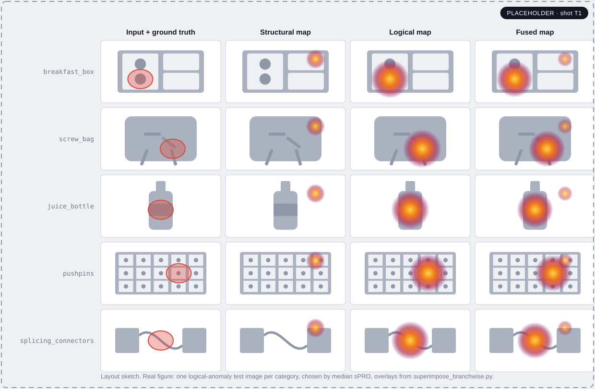
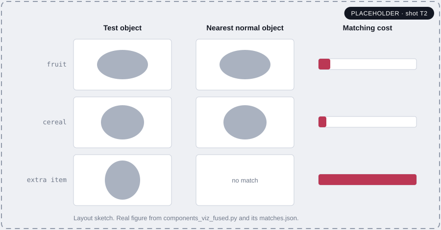

Logical and Structural Anomaly Detection on MVTec LOCO
Fusing a patch memory bank with object queries from a segmentation transformer
TL;DR: A scratch is a local defect. A missing screw is a logical one. I use a patch memory bank for the first, a segmenter's object queries matched against the nearest normal image for the second, and add the two maps on a shared scale.

Method
- Structural branch. PatchCore-style. Features from two backbone stages are concatenated and pooled over 3×3 neighbourhoods. A test patch is scored by its distance to the nearest patch seen on normal images.
- Logical branch. A Mask2Former-style segmenter turns the image into one object per class, each with a mask, an area and a pooled embedding. Each object is compared with the same class in the most similar normal training image. A class present on one side only is painted at full strength.
- Fusion. The two maps have different units. Each is divided by its own 99.5th-percentile score on held-out normal images, then they are added and smoothed once.
Results
- Swapping the feature extractor needs no retraining, because both branches only read frozen features.
- Adding a stride-32 stage to WideResNet-50 lowers the score to 0.804. The coarse features dilute the patch descriptor.
- The amount of smoothing changes image-level AUROC by about 0.002. It matters for localisation, measured by sPRO.

What it cannot do
With one object per class, the logical branch cannot count. Two screws and three screws look the same to it. An instance-level variant that splits each class into connected components fixes this only when the instances do not touch, and in the categories where counting matters they often do.
Dataset: MVTec LOCO AD (Bergmann et al., IJCV 2022). Builds on PatchCore (Roth et al., CVPR 2022) and Mask2Former (Cheng et al., CVPR 2022).